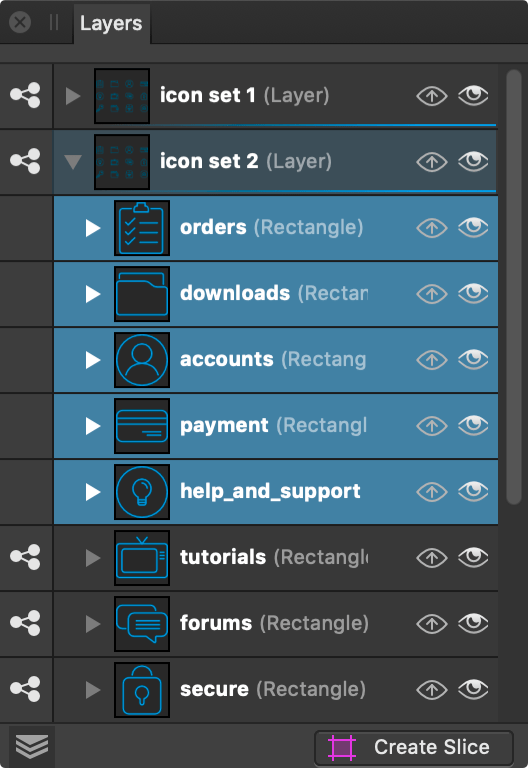

About the Layers panel
Layers are composited together to form your complete design which shows up on your page.
The panel can be used to build up your design as multiple layers, with each layer devoted to a particular facet (e.g., lines, shapes, text, adjustments, etc.).
From the Layers panel you can:
- Create or delete layers
- Select artboards, layers, groups and objects
- Arrange and reorder layers and artboards
- Show and hide artboards, layers, groups and objects
- Lock artboards, layers, groups and objects
- Clip objects or layers
- Apply layer and artboard opacity
- Apply blend modes and blend ranges to layers
- Create masks
- Add layer adjustments and effects
- Tag layers with a choice of colors
- Exclude object from being a snapping candidate (right-click object only)
- Switch off Auto-scroll (panel scrolls to layer content when it is selected on the page)
- Display layer thumbnails with a solid or checkerboard background
- Determine the size of layer thumbnails

The panel displays the following:
 Panel Preferences menu which offers:
Panel Preferences menu which offers:- Auto-Scroll—when selected (default), the selected object's layer entry immediately comes into view in the Layers panel.
- Checkerboard Background—when selected, layer thumbnails will display with a checkerboard background.
- Show Group Thumbnails—when selected (default), each group layer’s thumbnail displays a preview of all the group’s contents. When deselected, a folder icon is shown instead.
- Compact Group Rows—when selected (default) and thumbnails are set to medium or large size, group layers will be displayed at the small size.
- Small Thumbnails—when selected (default), displays small thumbnails.
- Medium Thumbnails—when selected, displays medium thumbnails.
- Large Thumbnails—when selected, displays large thumbnails.
- Opacity—Adjusts opacity of the selected items.
- Blend Mode—Changes how the applied pixels interact with existing pixels on the layer below. Choose mode type from a pop-up menu.
 Blend Options—Click to access a dialog for setting the blend ranges, blend gamma and antialiasing settings for the selected layer.
Blend Options—Click to access a dialog for setting the blend ranges, blend gamma and antialiasing settings for the selected layer. Lock/Unlock—Click to lock or unlock selected items to prevent accidental selection and transformation.
Lock/Unlock—Click to lock or unlock selected items to prevent accidental selection and transformation. Expand/Collapse—Click to expand/contract the item, revealing nested content.
Expand/Collapse—Click to expand/contract the item, revealing nested content.- Item—The created artboard, layer, group or object, showing a thumbnail of contents, the item's name and the type of item (in parenthesis).
 Hide/Show item—Uncheck to hide the item; check to make it visible again.
Hide/Show item—Uncheck to hide the item; check to make it visible again. Edit All Layers—Allows selection and editing of objects across all artboards and layers (rather than the current layer).
Edit All Layers—Allows selection and editing of objects across all artboards and layers (rather than the current layer). Mask Layer—Creates a layer mask to reveal a portion of a layer while the rest of the layer remains hidden.
Mask Layer—Creates a layer mask to reveal a portion of a layer while the rest of the layer remains hidden. Adjustments—Adds an adjustment layer to the current layer for tonal and color correction.
Adjustments—Adds an adjustment layer to the current layer for tonal and color correction. Layer Effects—Applies a layer effect to the currently selected layer.
Layer Effects—Applies a layer effect to the currently selected layer. Add Layer—Creates an empty new layer above the currently selected layer.
Add Layer—Creates an empty new layer above the currently selected layer.- Add Pixel Layer—Creates an empty new pixel layer above the currently selected layer.
 Remove Layer—Deletes the currently selected layer or artboard.
Remove Layer—Deletes the currently selected layer or artboard.
Labeling layers with colors
Layers can be colored to help with organization and navigation of your document. Each layer can be assigned a single color.
To assign a color label:
- In the Layers panel, select one or more layers.
- Right-click one of the selected items.
- Choose a color at the bottom of the contextual menu. It is applied to the entire selection.
When you assign a color label to a layer group, it is also applied to layers within the group except any that have a color label already.
To remove a color label:
- In the Layers panel, select one or more layers.
- Right-click one of the selected items.
- At the bottom of the contextual menu, choose the first color swatch (white with a red line through it). Color labels are removed from the entire selection.
When you remove a color label from a layer group, it is also removed from any layers of the same color within the group.